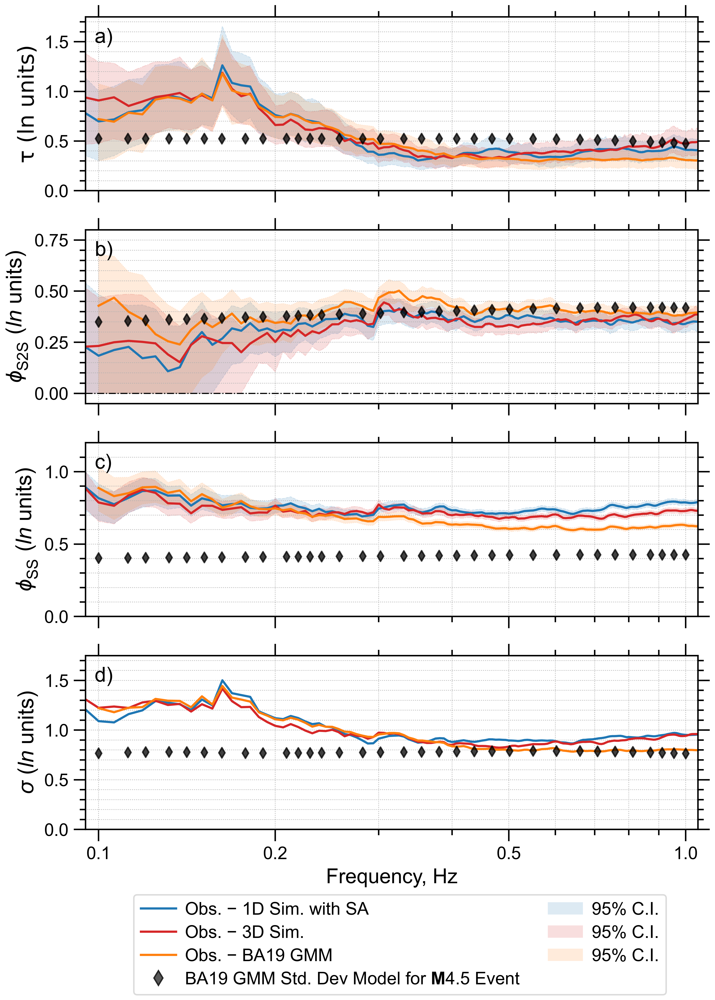
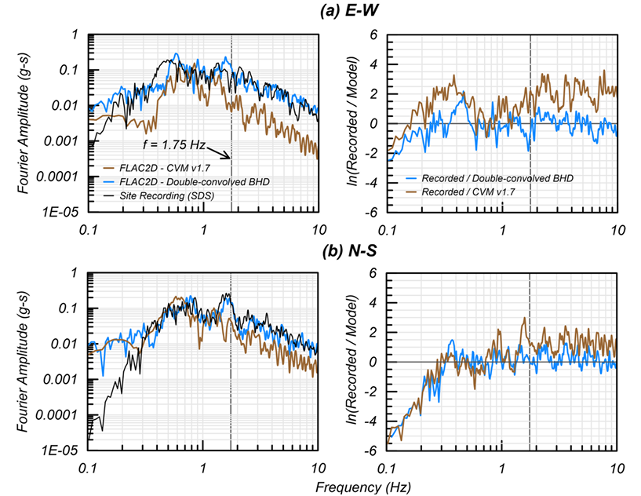

Geotechnical & Structural Earthquake Engineering
Sajan K.C.
Ph.D. Candidate in Civil Engineering
University of Southern California
I study physics-based earthquake ground-motion simulations, their validation against observed recordings, and their engineering applications. My work integrates numerical wave-propagation modeling, ground-motion analysis, and earthquake case histories to better understand simulated ground motions and their effects on infrastructure.
Research
Physics-Based Ground-Motion Simulation and Validation
Evaluating numerical ground-motion simulations against recorded earthquakes, including frequency-dependent comparisons and statistical residual analyses.
Seismic Velocity Models and Wave Propagation
Investigating how three-dimensional subsurface velocity structures and earthquake source characteristics influence simulated ground motions.
Engineering Applications
Applying simulated ground motions to liquefaction assessment, seismic site response, and structural response validation using earthquake case histories.
Selected Publications
Featured Publications

Assessing Bias and Variability in Physics-Based Ground-Motion Simulations for Moderate-Magnitude Earthquakes in Southern California
Bulletin of the Seismological Society of America, 2026
We evaluate physics-based ground-motion simulations against observed motions for 30 moderate-magnitude (M 4.0–5.5) earthquakes (3604 recordings at 782 stations) in the greater Los Angeles region of southern California. Simulations use both plane-layer (1D) and laterally variable (3D) velocity structures, and performance is assessed using effective amplitude spectrum (EAS) residual analysis across the frequency band 0.1–1.0 Hz. Sensitivity of key simulation parameters, including minimum shear-wave velocity (VS), anelastic attenu- ation scaling, and VS30-based near-surface tapering in the 3D velocity model, is evaluated through their influence on residuals. Results show that adopting a minimum VS of 200 m/s combined with an anelastic attenuation scaling of QS 100VS reduces mean EAS bias in the upper-reliable frequency band by ∼0.4 ln units, and near-surface velocity tapering in non- basin regions reduces bias further by ∼0.2 ln units. For events below M 5, simulations based on empirical magnitude–area scaling relations perform comparably with observations. However, for two larger events (M 5.39 and 5.12), simulations using rupture areas con- strained by finite-fault studies reduce EAS residuals by ∼35% to 65% in amplitude over 0.3–0.7 Hz relative to those based on empirical relations (though both events remain under- predicted). Mixed-effects regression is used to quantify between-event (τ), site-to-site (φS2S), within-site (φSS), and total (σ) variability for the calibrated simulations and an EAS-based ground-motion model (GMM). In the reliable frequency range, τ is comparable across all approaches, the 3D simulations reduces φSS and σ relative to 1D site-adjusted simulations (by ∼0.05 ln units), and both simulation types yield lower φS2S than the GMM, compressing the geomorphic-dependent site bias evident in the GMM (by up to ±0.10–0.13 ln units) to within ±0.05 ln units for most categories. These results reinforce the importance of jointly calibrating 3D velocity models and earthquake source characterizations for physics-based seismic hazard applications.

Nonlinear Dynamic Analyses of 2001 Nisqually Ground Failures to Validate Ground Motion Simulations
ASCE 2027 Conference Proceeding, 2027
The Mw 6.8 2001 Nisqually earthquake produced widespread liquefaction and sediment ejecta across the Seattle metropolitan area. This event is invaluable for evaluating the ability of physics based ground motion simulations to reproduce observed ground failure, due to the availability of extensive geotechnical datasets, ground motion recordings, and regional velocity models. A well documented case history site in Downtown Seattle that exhibited significant sediment ejecta following the Nisqually earthquake is evaluated using nonlinear dynamic analyses (NDAs). The NDAs were conducted in FLAC2D using simulated ground motions derived from a recent regional community velocity model. The subsurface profile consists of estuarine deposits with interbedded sand and silt layers overlying thick, soft clays. The representative soil column profile was developed primarily from cone penetration tests (CPTs) and laboratory test data from nearby borings. The NDAs employed the PM4Sand and PM4Silt constitutive models to represent cyclic soil behavior and excess pore pressure generation of the sandy, silty, and clayey layers. The simulated ground motions were deconvolved and applied at the base of the soil column. The resulting surface motions were compared to strong ground motion recordings from nearby stations to evaluate the influence of nonlinear site effects. Additionally, a double-convolved recording from a nearby stiffer-site station was used as input to validate the model's ability to reproduce observed ground failure. Estimates of liquefaction triggering extents and sediment ejecta potential were then assessed relative to documented field observations. The results provide a case history framework for evaluating the ability of physics-based ground motion simulations to reproduce nonlinear site response and liquefaction manifestation at soft soil sites. The study also highlights the opportunities and limitations in using simulated ground motion for ground failure assessments in complex depositional environments.
Other Publications
- A half decade under the open sky? Physical recovery models for collapsed residential buildings in the 2015 Gorkha earthquake, Nepal. Sajan K.C., Dipendra Gautam. 13th National Conference of Earthquake Engineering (13NCEE), 2026.
- Validating Wharf Damage at the Port of Oakland from the 1989 Loma Prieta Earthquake: A Study of Lateral Spreading Using Earthquake Simulations. Sajan K.C., Chukwuebuka C. Nweke. GeoCongress 2026.
- Stochastic discrete event simulation for government assisted owner driven participatory housing recovery modeling: Application to 2015 Gorkha earthquake sequence, Nepal. Dipendra Gautam, Sajan K.C., Olafur Petur Palsson. Resilient Cities and Structures, Elsevier, 2026.
Experience
Graduate Research Assistant
University of Southern California
Graduate Teaching Assistant
University of Southern California · Mechanics of Materials and Geotechnical Engineering Laboratories
Additional academic and professional experience will be added later.
Contact
For research discussions and professional inquiries, please email sajankc@usc.edu .